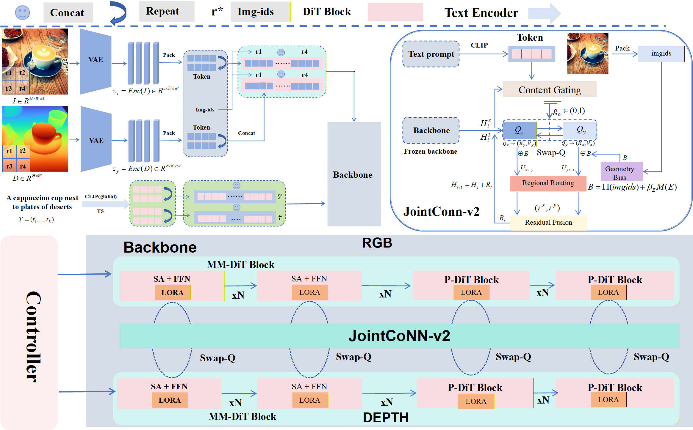

Abstract
This work revisits diffusion Transformers for text-depth–conditioned and joint image synthesis, focusing on two bottlenecks: (1) cross-modal attention degrades around edges and structural regions, causing geometric distortions; (2) the depth branch is easily dragged by the semantic branch, leading to over-coupling and instability. To address these issues, we propose JointConn-v2 with GCM-WFM (Gated Cross-Modal Weighted Flow Matching), a unified framework for joint and depth-conditioned image synthesis. JointConn-v2 strengthens bidirectional guidance via Swap-Q cross-attention, explicitly injects 2D relative positions and edge energy into the attention logits through a Geometric Mask Bias, performs token-level spatial selection of “to fuse / not to fuse” via Regional Routing, and stabilizes cross-branch injection at both the sample and structural levels using a Content Gate with residual fusion. On the training side, we introduce GCM-WFM, which regresses a joint vector field in the packed sequence space and incorporates temporal, geometric, gating, and routing terms into the objective with diagonal weights. Our approach achieves a better balance between edge controllability and cross-modal consistency.
Key Idea
One-line description of the main idea.
What’s New
Two or three bullets of contributions.
Why It Works
Short intuition / mechanism.
Method
Figure: Overall pipeline.
Architecture
- Backbone: XXX
- Conditioning: text / depth / edges / seg
Implementation
- Resolution: 512
- Steps: 30 / sampler: XXX
- Hardware: A100 / etc.
Main Results
Show the most convincing comparisons first (1–2 screens).


More Comparisons
Dataset / Setting 1


Dataset / Setting 2


Ablations
Quantitative
Paste a table here (HTML) or embed a screenshot.

Table: Ablation on components.
Qualitative

More cases consistent with Table X.
Video
Demo video.
BibTeX
@inproceedings{anonymous2026paper,
title = {Your Paper Title},
author = {Anonymous Authors},
booktitle = {XXX},
year = {2026}
}